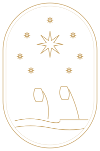
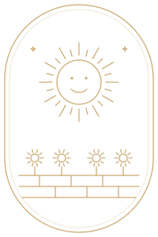
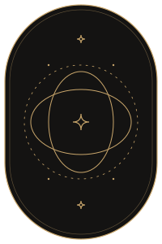
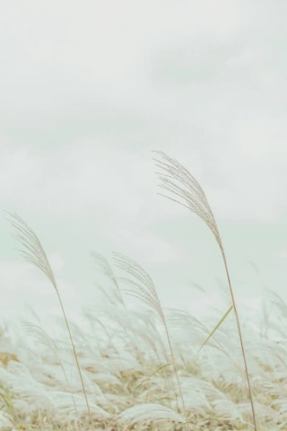
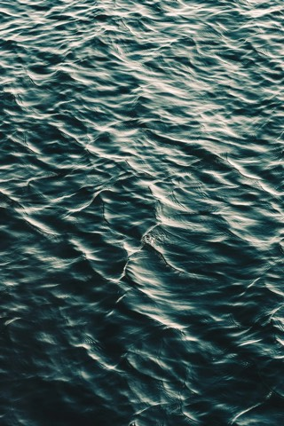
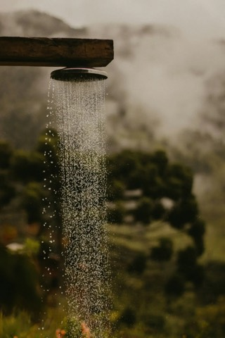
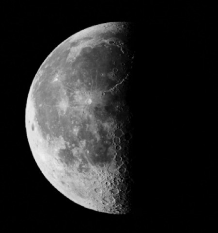

Spec 05 · Para validar · 19 oct 2026
Ilustraciones e imágenes
Cuándo se ilustra, cuándo va una foto y cómo se trata cada una. La app tiene hoy dos familias de ilustración, tres usos de fotografía y 146 MB de imágenes sin optimizar. Todos los archivos están en la galería de assets.
Ilustración
Siempre de línea. Nunca relleno, sombras, degradés ni emojis como ilustración.



Familia 1 · Oráculo
Línea dorada sobre carbón, dentro de un arco. Solo en las piezas del oráculo: arcanos, dorsos, registro diario.
Familia 2 · Interfaz
Línea en tinta sobre claro. Encabeza un bloque, acompaña un estado vacío o marca la fase lunar.
| Regla | Oráculo | Interfaz |
|---|---|---|
| Color de línea | --oracle-gold | --ink-strong; detalles secundarios al 25–35 % |
| Fondo | --oracle-ink, siempre | Claro (--surface-page, -base, -muted) |
| Grosor | 1,2 en viewBox 200 × 300; marco 1,2 + interior 0,6 | 1,1 en el tamaño final; íconos de lucide 1,5 |
| Remates | Puntas y uniones redondeadas. Excepciones al “sin relleno”: puntos chicos (estrellas, ojos) y la parte iluminada de la fase lunar en MoonPhaseIcon. | |
| Motivos | Símbolo del arcano + celeste (estrellas, luna, sol, agua) | Celeste y cotidiano: estrella, órbita, luna, cuenco, llama, hoja |
| Tamaño | 168 de ancho en la carta; 104 en el abanico; 56 en el registro | 64–104 de alto; nunca más de una por pantalla |
| Movimiento | Los trazos se dibujan al revelar (2,6 s) y las estrellas titilan | Loop lento (estrella que flota, órbita que gira); se acelera mientras la app “escucha” o “escribe” |
| Dónde vive | components/arcana/ArcanaArt.tsx | Componentes junto al bloque que ilustran; animación en styles/oracle.css |
Sí
Una ilustración de línea, en tinta, que acompaña el título del bloque.
No
Emojis o íconos rellenos como ilustración. Tampoco oro sobre fondo claro (2,3:1).
Cómo se suma una ilustración nueva
- Se dibuja en SVG con la grilla de su familia (200 × 300 para arcanos, cuadrada o 104 × 80 para interfaz) y
stroke="currentColor". - Se arma como componente React, con
aria-hidden="true"si es decorativa. - Si se anima, la animación va en CSS y se apaga con “reducir movimiento”.
- Se corre
tools/build-galeria.pypara que aparezca en la galería.
Fotografía
La foto da contexto y clima. Siempre naturaleza o materia (agua, fuego, bosque, montaña, cielo, piedra), con luz natural y sin texto en la imagen.

Hero de Home
Pantalla completa, vertical. Una al azar en cada visita, con texto blanco encima.

Portada de ritual
3:4 en la grilla y la recomendación; 9:16 en Stories y el detalle. Radio 24.

Nota de la Wiki
4:5 en la card; ancho completo arriba de la nota.
| Uso | Proporción | Carga |
|---|---|---|
| Hero de Home | 9:16, cubre la pantalla | Inmediata (es lo primero que se ve) |
| Portada en grilla y recomendación | 3:4 | loading="lazy" |
| Stories y detalle de ritual | 9:16 | Inmediata la primera; el resto lazy |
| Wiki (card y nota) | 4:5 | loading="lazy" |
Texto sobre foto
El contraste no se puede garantizar con la foto sola: el texto blanco siempre va sobre un velo.
HERO_TEXT_THEMES); en ese caso, negro al 66 % o más y sin velo, para no apagar la foto.Peso y formato
146 MB
de fotos en public/ hoy
6 MB
la más pesada (story-air-3.jpg, 8165 × 12247 px)
4,3 MB
las 50 fotos en uso, en WebP (etapa 3)
Las fotos se suben tal como salen de la cámara o de Unsplash. Cada portada de la grilla descarga entre 0,5 y 6 MB para mostrarse a unos 170 px de ancho. Las fotos de rituales pesan 2,4 MB en promedio: cada 10 portadas son unos 24 MB de datos móviles.
| Regla | Valor |
|---|---|
| Formato | WebP calidad 75 (JPEG de respaldo solo si hace falta). |
| Tamaño | 1080 px de ancho, un solo archivo por foto (la misma foto se usa en la grilla y a pantalla completa). Peso objetivo: menos de 250 KB. |
| Cómo | scripts/optimize-images.sh foto.jpg deja foto.webp al lado (usa cwebp; rechaza fotos con rotación EXIF). |
| En el HTML | width y height (o aspect-ratio) para que no salte el layout; decoding="async"; loading="lazy" salvo lo primero que se ve. |
| Recorte | object-fit: cover con object-position elegido por foto si el motivo no está centrado. |
| Nombres | uso-tema-n.webp en minúscula (story-agua-1.webp). Hoy conviven abastract (con error), inglés y castellano. |
| Créditos | Las fotos de Unsplash guardan el autor en los datos (no solo en el nombre del archivo) y se acreditan en la nota. |
Accesibilidad
| Caso | Texto alternativo |
|---|---|
| Foto decorativa (hero, fondo de Stories) | alt="". Hoy el hero dice “Cielo actual”, que no describe la foto: pasa a vacío. |
| Foto que acompaña un título visible (portada de ritual, nota) | alt="" si el título ya está al lado; si la foto es el único contenido, el título del ritual. |
| Ilustraciones | aria-hidden="true". El arcano se nombra en el texto de la carta. |
| Fase lunar sola (sin texto al lado) | role="img" y aria-label con el nombre de la fase. |
Limpieza
Archivos que hoy no usa ninguna pantalla. El detalle está en la galería, marcado como “Sin uso”.
| Archivos | Qué hacer |
|---|---|
5 lunas en PNG: moon-bg, moon-phases, creciente, llena, menguante | Borrar (son versiones previas de las que sí se usan). |
7 fotos de rituales: story-grass-4…8, story-mountain-4…5 | Borrar, o asignarlas a rituales nuevos. |
1 foto de la Wiki: heidi-fin-…-unsplash.jpg | Borrar o usar en una nota. |
components/figma/ImageWithFallback.tsx | Revisar: su texto de error está en inglés (“Error loading image”). |
Decisiones
9. Lunas: íconos de línea o renders en PNG
MoonPhaseIcon · línea

moon-waxing.png · render
MoonPhaseIcon) y dejar los PNG solo donde la luna es protagonista (el calendario cósmico), como “foto” de la luna. Así hay un solo lenguaje para los íconos.10. Optimizar las fotos
width/height, loading y alt, y borrar lo que no se usa. Es el cambio que más se nota en velocidad.